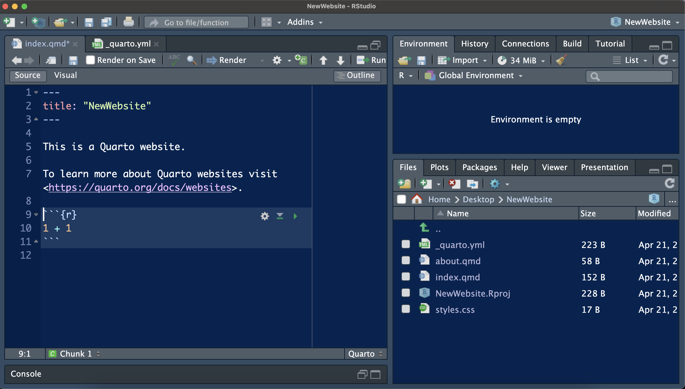
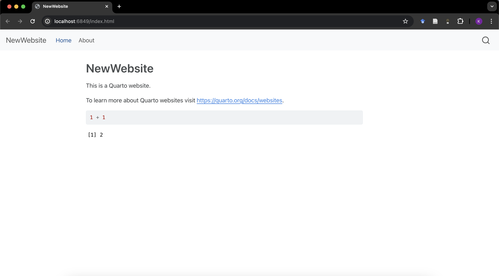

There’s tons of resources out there for how to built a personal website as an academic, made by folks with actual expertise in web design, coding, etc.
I’d wanted to start my own blog / digital garden for years. Initially, the roadblock was imposter syndrome - did I actually have anything to write about? Would it be useful to anyone? isn’t it all a bit cringe?1
1 Counterpoints:
I’ve never suffered from a lack of opinions
writing is useful to me so it doesn’t really matter if it’s useful to anyone else
cringe isn’t real
Once those worries were shouted down overcome, the main roadblock became technical know-how. I originally developed my website using a bundle of tools including blogdown, github, netlify all centered around the very popular academic theme from hugo. I’ve had it for years now, but it was heavy-lifting - building it took what felt like a week of work back in 2020, and I couldn’t update easily without having to relearn the folder structure rules each time.
Originally, I wanted to tweak the theme, add some blog pages and be done with it, but writeups like this from Maelle Salmon discussing hugo theme maintenance and this one from Alison Hill on Quarto made me wonder if there was a better way.
The straw that broke the camel’s back was vanity the Tufte theme that’s possible in Quarto - per the requirements of receiving a degree in geography, my copy of Visual Display of Quantitative Information lives on my coffee table. Adding Tufte’s beautiful sidenotes and column spacing is as easy as adding a line or two of yaml in Quarto and opens up a whole new world of snarky asides2.
2 See: this entire writeup
Personal Website Development 101
“Have a personal website” is advice you run into over and over when thinking about a scientific career. In my experience, that advice started and stopped there. Which is too bad, since questions like What do I put on my website? How do I build one? How much time should I sink into this? are the start of some potentially really interesting conversations.
Briefly3, I think the logic behind the advice “Have a website” is usually that websites make you findable. In the grand tradition of lagging behind every other field, academia doesn’t typically use LinkedIn in any deep way and alternatives like ResearchGate or Academy haven’t seemed to take off. So, a biographic / personal website can be a straightforward way to establish your web presence in science (or, at a minimum, make you slightly more google-able)4.
3 lol
4 there are so many Kate/Katherine Hayeses and they all seem to have gotten into life coaching lately
My two cents is that the easiest way to answer the questions: What do I put on my website? How do I build one? How much time should I sink into this? is to figure out your ultimate objective first.
I know that sounds obtuse: Kate, you just said prevailing advice is to have a website, isn’t having the website the objective?
Sure, but what do you want to get out of having a website? Is it checking the box so you can move on with your life / science? Do you want to connect with other scientists in your field? Is it an exercise in coding?
No wrong answers here, but if you’re hoping to check the box and get the hell off of social media5, then it should shape how you build one and how much time you want to put in. If it works to have your website be a living CV, it might be worth finding a squarespace / weebly / etc platform where you can fill in the basic info, get a domain name and call it a day.
5 good on you
For me, drafting a website was originally an exercise to get more comfortable with Github. I had had some exposure, but didn’t use it consistently in my workflow and didn’t really have any collaborators that used it. Using repositories to host a website seemed like a quick way to get a bunch more experience with version control. Hence my excuse to procrastinatetake the long way round, instead of turning towards more pre-packaged templates.
When I first drafted my website as a sophisticated procrastination techniquesavy professional development exercise during my PhD, it was pretty sparse. I had my basic affiliation, interests, education information, a PDF copy of my CV and links to my other online presences (ie, my google scholar profile, my github and my now mostly obsolete twitter profile). Out of imposter syndrome/FOMO, I added a Publications page and a Project page since I’d seen those on other people’s websites, but I’m not sure either added anything in retrospect.
But, I’d always been interested in expanding it. As a remote postdoc who works from home, I’d like more ways to interact with other scientists, and while it’s probably presumptuous to assume any of this will be read at all, writing for even an imaginary audience has been a great way to write more day to day. Hence, blog.
Switching from blogdown to quarto
Initiating a quarto website
Initiating a Quarto website is shockingly easy. Working from Rstudio, you simply open a New Project, select Quarto Website, name it something new and click Render to preview.
Your Rstudio will look like this:

a brand new quarto website
And your render will look like this:

off to the races
That’s it. 4 steps, and you’re previewing a website with a landing page, a menu bar and two pages. Now, your render won’t be hosted anywhere but locally, but already that’s a much more easy entry than the one I remember from Hugo.
To add a blog:
To add a blog6, or any pages that will live under a different landing page than the home page, add the following steps:
6 You can also create a “Quarto Blog” instead of “Quarto Website” by going to New Project - I just wanted to figure out how to do it by hand so I knew how to initiate other website pages down the line
Create a landing page
Initiate a quarto file for your landing page and call it something like blog.qmd
Within blog.qmd, add the following lines to the yaml code at the top:
Under navbar, add lines that specify text and file similar to the example above (so, probably text: “Blog” and file: blog.qmd)
Create a folder called posts - your posts will live here, within individual folders
Within posts, each folder will contain an index.qmd file for the blog post
Writing a blog post
How to make a Series
To publish blog posts in a series, they need to be located in a subdirectory of the posts folder. You’ll also need a landing page. I’m writing up a series of posts on some of the model parameterization work I’ve done recently for my fire-herbivory project, so I named my series folder posts/param_series and added a landing page named param_landing.gmd (I know, creative). Make sure the landing page is located in the top directory, the one where your about / index / blog quarto documents are located.
You’ll need to modify the contents: setting within your blog.qmd file so it sees the contents of the series folder. You can do this using glob syntax - a very fun name for what essentially means “global patterns”. ** can be used to tell quarto to look within any folder, and *.qmd will select any quarto document.
Thus, you can then change your blog yml from:
title:"Blog"subtitle:"An attempt at a digital garden / notebook"listing:contents: posts
To this:
title:"Blog"subtitle:"An attempt at a digital garden / notebook"listing:contents:- posts/**/*.qmd- posts/**/**/*.qmd
And it should catch any quarto documents within the nested folders.
Switching netlify hosts
My old website was already hosted on Netlify, and I wanted to hold on to the same domain.
Initially, I started my Quarto website in a folder adjacent to the folder containing my existing website. When it came time to migrate, I copied my old website folders into an archive, and then replaced them with the new quarto folders (keeping the same Rproj file). Then I held my breath and pushed changes.
After that, I needed to mollify Netlify - I disconnected
Some other unsorted tricks
The following is mostly for my own reference, so proceed with care. If you’re curious about anything else on this site, the full code is available in my corresponding github repository.
draft: false - Publishing posts
I ran into some trouble at first with draft: true - once you’ve added it to the the yml code at the top of your quarto document, you’ll need to delete it entirely to get the post show up once you’re ready to publish.
Adding pictures to the background of title blocks
Setting global blog post theme
You can use the _metadata.yml file to set options for all the files in the posts folder.
Mine looks like this:
# freeze computational output# (see https://quarto.org/docs/projects/code-execution.html#freeze)freeze:true# Enable banner style title blockstitle-block-banner:true# Default for Tufte Styleformat:html:toc:truetoc-title: Contentstoc-location: leftgrid:margin-width: 350pxreference-location: margincitation-location: margin# Adding comment sectionscomments:utterances:repo: k8hayes/BlogComments
New Post Template
To make starting new posts easy, I added a folder to my posts folder called NewPostTemplate - the index file within has the following settings:
---title:"New Post Title"subtitle:"New Post Subtitle"date: todaycategories:[]date-modified: last-modifieddraft:true---
Then, I can simply make a copy of that folder to start a new post. Make sure to update the date to the publication date once it’s finalized - using today and last-modified in the internal workings of the quarto document is not really considered best practice, since it means more rendering in the background (per the Quarto documentation).
Adding Comment Sections
I’m still figuring out how to add comments to the blog. There appears to be
Setting Tufte Theme
To use a Tufte-style theme in the blog posts, I’ve added the following code to my _metadata.yml file within the posts folder:
{# Default for Tufte Style} format: html: toc: true toc-title: Contents toc-location: left grid: margin-width: 350px reference-location: margin citation-location: margin
Packaging data for blog posts
I tend to work with some large files, and work across multiple desktops. In order to pull in data for individual blog posts, I’ve been playing with using save.image() to collect all the files in an analysis, and save an .RData file in a folder I can reference from the blog quarto document.
One quirk I haven’t sorted out yet - save.image() doesn’t save SpatRaster objects. Not sure how to deal with this yet.
More Resources
A non-exhaustive list of useful Quarto information